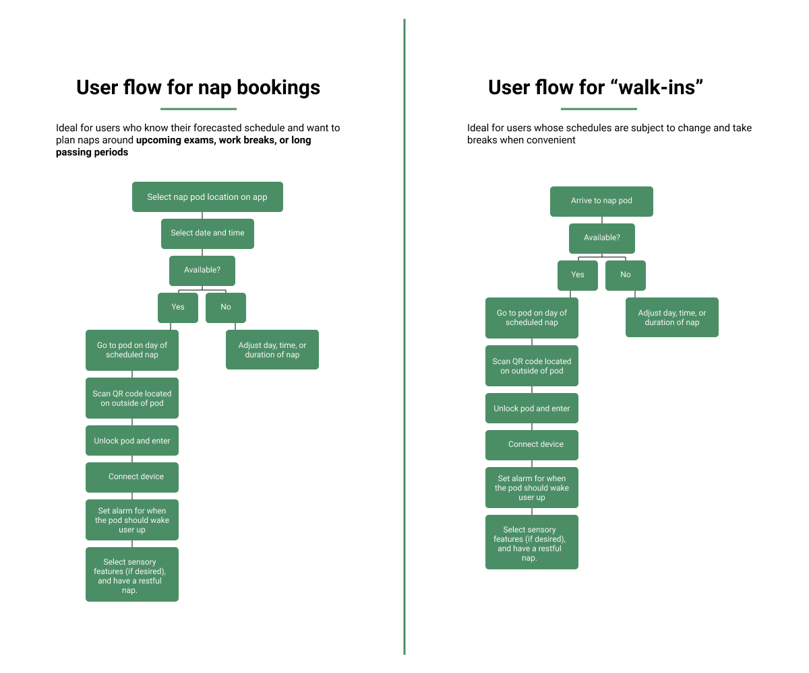

podzZz is a nap pod and mobile app that integrates audio, haptic, olfactory, and visual features to help college students de-stress. Targeted towards Purdue University students for its initial launch, we designed the pod to be placed in multiple locations on campus and accessible at all times a day.
In this project, I worked closely with five students and took the lead in user research and mobile app design.
We began the project with a contextual inquiry study at Wilmeth Active Learning Center, a popular study spot for Purdue students. We took note on general student behavior regarding sleep and study habits.
We also conducted a comparative analysis to understand the scope of solutions for sleep deprivation. Products included various sleep apps like Sleep Cycle and Relax Melodies, wearbles like eye masks, headphones, pillows, and weighted blankets, and nap pods.
These methods helped us understand student sleep and study habits, in which we identified key insights:
With these insights in mind, we created personas to empathize with our user group and fully understand their pain points.

Reviewing our personas' experiences, we identified design considerations to be addressed:
Reviewing our design considerations and persona pain points, we narrowed our ideation to focus on naps, as the problem of finding a quiet and comfortable place to rest amid a busy day was a recurring theme among our user group. Therefore, we storyboarded napping-on-campus scenarios for students:

We arrived at the solution of a sensory nap pod, podzZz, to be placed in multiple campus locations and offer fatigued students slight reprieve from their busy schedules. A quick 15-30 minute power nap would rejuvenate students' energy without disrupting their schedules or cause them to leave campus between classes or work.
Additionally, as we found most nap pods to offer a place to rest and listen to music in our research, we ideated on implementing audio, haptic, olfactory, and visual features within the pod to create an immersive, sleep-inducing experience.
We realized that users needed a way to control the sensory settings of the pod, and what better way to do so than through their personal devices? So, via Bluetooth connection, users' phones act as a remote control for the pod to customize all their sensory needs. This user flow demonstrates the progression of our cross-channel solution from a scheduled or walk-in perspective.

User dashboard

Scheduling a nap session

Setting an alarm for the nap
Using sensory features in pod
1. Outside pod

2. Open pod


2. Other features